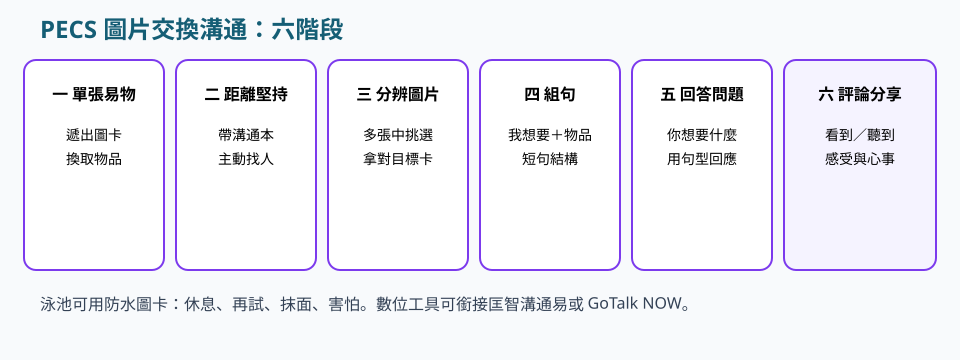
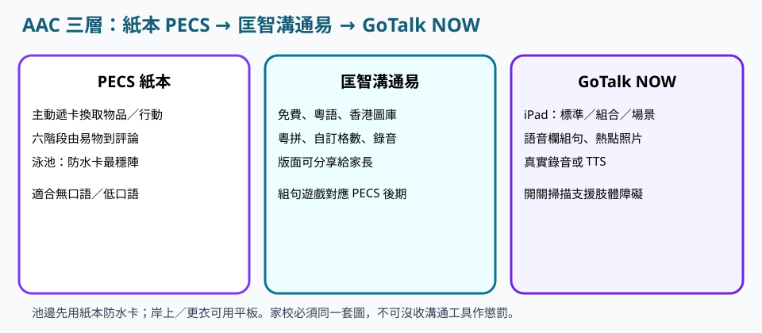
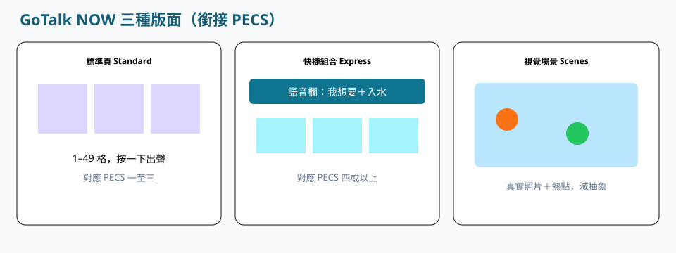
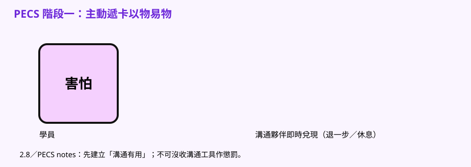

教學支援 · 2.8
請依序研讀導讀、重點與池邊準則，聽粵語說明，再以練習核對理解。
本網站根據課程講義、課堂分享與溝通工具筆記整理，供未能出席面授的學員系統研讀。不能代替醫療診斷、法律意見、課堂實習或面授扶抱示範。涉及健康、用藥、脊柱或癲癇等情況，須按家長／醫護文件執行。
溝通支援須由學員需要及家庭慣用方式出發。課前辨識PECS現階段，岸上比較匡智溝通易與GoTalk NOW，池邊以防水提示咭練習傳遞訊息，並讓學員逐步由提示過渡至主動溝通。
研讀次序：重點 → 粵語說明 → 本單元練習 → 下一單元「正向行為管理及小組教學」。




講義出處：PECS官方網站
課堂情境
學員未能以口語表示「停」，教師只提高音量。
教學原則
先了解現有階段；初期由提示者示範並協助遞卡，其後建立主動傳遞、辨別圖卡、組合句子及回答問題。
池邊執行
教案列明階段，例如「PECS第一階段：主動遞卡求物」，每次主動傳遞即給予所求物品或活動。
講義出處：香港匡智會
課堂情境
家庭使用本地圖示，課堂卻展示另一套抽象圖片，學員難以理解。
教學原則
選擇貼近粵語及香港生活情境的圖卡，並讓家用與課堂檔案編號一致；工具仍須配合學員操作能力。
池邊執行
岸上以同一組圖卡預習更衣及入水需要，水中改用對應含義的防水卡。
講義出處：GoTalk NOW官方資料
課堂情境
學員已慣用平板，但教師只用口頭重複指令。
教學原則
GoTalk NOW可按需要使用預設格、按一下出聲或組合頁；功能可與PECS不同階段配合，不宜直接視作同一進度。
池邊執行
先由家庭及教師試用比較操作、輸出及版面需要；平板留在岸上乾區，水中沿用紙本防水卡。
講義出處：PECS官方網站
課堂情境
未防水平板接近池邊，學員亦未能穩定傳遞圖卡。
教學原則
水中只用防水卡；先提供最少實用詞卡，如停、再試、抹面、害怕、休息、飲水、完成、出水及我想要。
池邊執行
先示範，再給短時間提示；回應每一次有效傳遞，並按階段逐步減少提示。
講義出處：香港教育局特殊教育需要支援
課堂情境
教師以長句及多項選擇同時要求，學員只理解「停」或指向其中一項。
教學原則
溝通形式應配合理解、表達、感覺及操作需要，不應只按障礙標籤決定；可比較口語、手勢、圖片、實物或AAC。
池邊執行
每次提供一項清晰要求，容許指向或取卡，再讓學員以適合形式回應。
講義出處：香港教育局特殊教育需要支援
課堂情境
多項規則同時發出，學員未能判斷下一步。
教學原則
將課節分段，預告次序及轉場，並因應聽覺、視覺、注意力及理解需要提供閃爍提示、實物、觸覺或示範。
池邊執行
每次只給一個主要訊息；完成一步後預告下一步，並以圖卡配合同一動作及情境。
講義出處：Autism Education Trust溝通支援資料
課堂情境
學員以發聲、推卡、轉身或離開表達不適，教師立即制止其行為。
教學原則
先辨識行為可能承載的溝通功能，再提供合適選項；溝通支援不應以奪走工具作懲罰。
池邊執行
預備「停、再試、休息、害怕、幫忙」等卡；遇相關行為時先提供卡片或手勢，記錄其選擇及有效回應。
三題判斷：下列做法是否符合本單元池邊準則。
以下與本頁錄音同一份講稿。建議先讀重點，再聽說明，把判斷次序聽清楚。